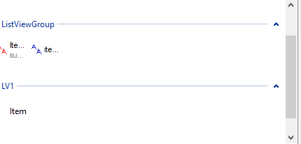
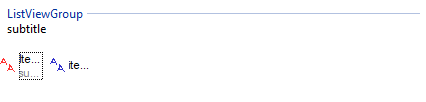
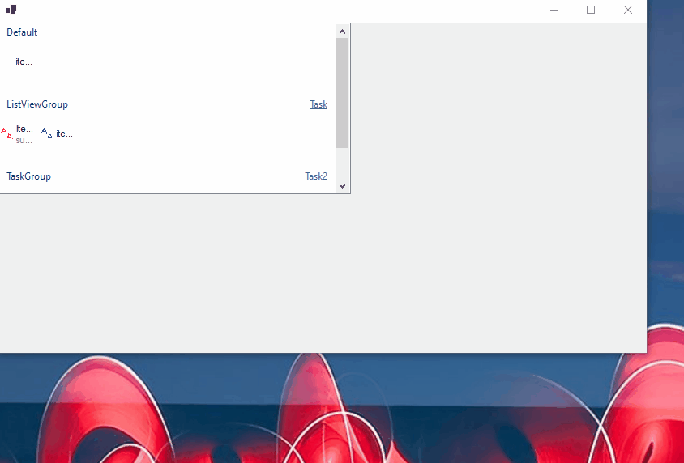
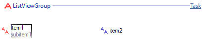
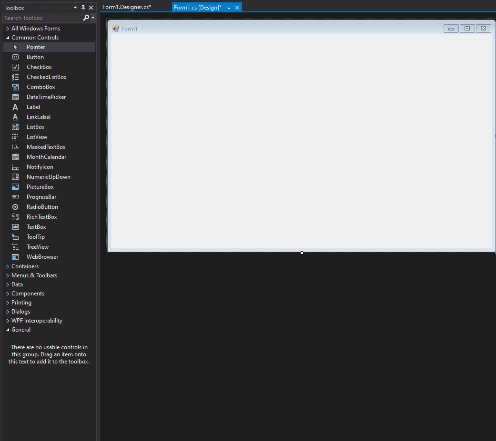
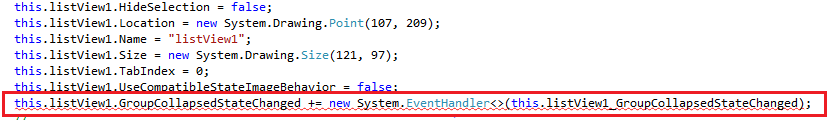
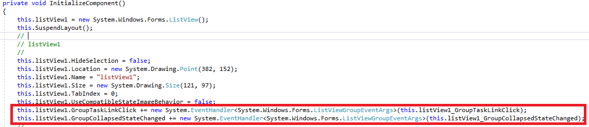

Modernizing the WindowsForms ListView Control
The ListView control allows users to display a list of items with text (ListViewItem) and optionally group them (ListViewGroup). A ListView may appear similar to the list of files in Windows File Explorer. Coming onto the WindowsForms (WinForms) team, ListViewGroup had few functionality available to customers. The Windows Common Controls had upgraded LVGROUP exposing more functionality to the ListViewGroup that would serve to be useful for the ListView control as a whole. This had yet to be updated in the WinForms runtime codebase. To modernize WinForms ListView control, I implemented four new properties to ListViewGroup that exposes some of the functionality that was made possible by the Windows Common Control update to ListViewGroup. These properties are: CollapsedState, TaskLink, Subtitle, and TitleImageKey/TitleImageIndex.
CollapsedState allows users to collapse/expand their ListViewGroups, which is immensely helpful in the scenarios where there are multiple ListViewGroups with various ListViewItems assigned to each. 
Subtitle now allows users to add subtitles to their ListViewGroup. 
TaskLink provides users with the ability to launch a link through a newly added event handler upon clicking on the name of the task, which the user gets to set. 
TitleImageKey/TitleImageIndex allows users to now include an icon next to their ListViewGroup headers like the red 'A' that appears next to the header 'ListViewGroup' 
Previously, I had made these implemented these properties on the runtime side of WinForms. The runtime side of WinForms holds all the implementations of the various controls it offers. Runtime is also an open-source project and can be contributed to here. WinForms also has a designer side, which holds all the logic for the designer. The designer helps easily build forms through dragging and dropping different controls, positioning them nicely, and changing its values. The designer auto generates code as the values on the different controls change via user input so that those with little programming experience can build their own windows forms apps. Please see the gif below for a visual on what I am referring to. 
One of the issues I ran into during my internship was the designer auto code generation. This is the code in the InitializeComponent method that you see highlighting in the gif. For the CollapsedState and TaskLink properties, generic event handlers were a part of the API that did not quite come out correctly in the designer's auto generated code, ultiamtely causing errors as there is nothing inside the < >. 
These event handlers were the first generic types to be introduced into the codebase. To remedy the errors, I explored the designer side of WinForms, a whole different codebase from runtime, to include code that would properly read and write generic event handlers. The designer now generates the correct code for these event handlers to work properly and future event handlers that have a generic type when created through the designer. 
Overall, it was extremely rewarding to be able to take my implementation on the runtime side of WinForms all the way through to see it working on the designer side of WinForms. This was my first software engineering internship and I learned tons. I am extremely grateful to have been placed on the WinForms team where I felt so supported by my teammates and was able to make an impact.